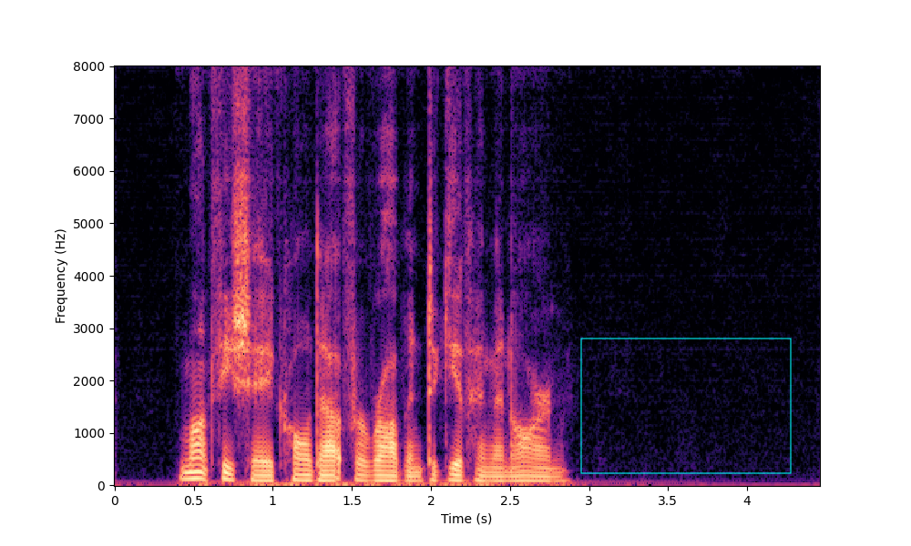

Universal Speaker Embedding Free Target Speaker Extraction and Personal Voice Activity Detection
Arxiv: not yet available
SparseLibrimix-2mix
The following table presents, for each evaluation sentence, three separated utterances generated by the pre-trained model, MTSS-ReLU, and MTSS-Softmax, respectively. pre-trained model: the pre-trained SpEx+ model from https://github.com/xuchenglin28/speaker_extraction. MTSS-ReLU: Using ReLU as the activation function and do not impose constraints on masks. MTSS-Softmax: Using softmax function to limit the sum of masks to 1.
| Overlap Ration | 0% | 20% | 40% |
| Mixture |  |
 |
 |
| (Audio) | |||
| Target |  |
 |
 |
| (Audio) | |||
| USEF-TP - Only TSE |  |
 |
 |
| (Audio) | |||
| USEF-TP (w/o IM) (w/o SL) |  |
 |
 |
| (Audio) | |||
| USEF-TP (w/o SL) |  |
 |
 |
| (Audio) | |||
| USEF-TP |  |
 |
|
| (Audio) |
Demo 2: SD-MTSS model
The following table presents, for each evaluation sentence, three separated utterances generated by the SpEX+ model and SD-MTSS model, respectively. The enrollment wave of both models is generated based on the results of the SD model.
| Id | 1 | 2 | Avg CER |
| Mixture | 95.83% | ||
| SpEx+ | 44.34% | ||
| SD-MTSS | 35.83% |